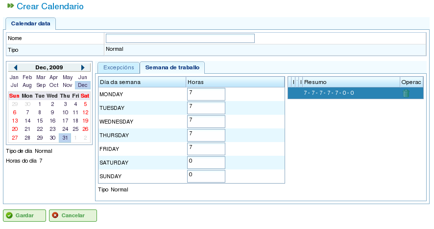

Календари
Contents
Календари — это сущности в программе, определяющие рабочую мощность ресурсов. Календарь состоит из ряда дней в течение года, причём каждый день разделён на доступные рабочие часы.
Например, в праздничный день может быть 0 доступных рабочих часов. Напротив, типичный рабочий день может иметь 8 часов, обозначенных как доступное рабочее время.
Есть два основных способа определить количество рабочих часов в день:
- По дням недели: Этот метод устанавливает стандартное количество рабочих часов для каждого дня недели. Например, в понедельник обычно может быть 8 рабочих часов.
- По исключениям: Этот метод позволяет устанавливать конкретные отклонения от стандартного графика по дням недели. Например, понедельник, 30 января, может иметь 10 рабочих часов, заменяя стандартный понедельничный график.
Администрирование календарей
Система календарей является иерархической, позволяя создавать базовые календари и затем выводить из них новые календари, формируя древовидную структуру. Производный от вышестоящего календаря будет наследовать его ежедневные расписания и исключения, если не изменить их явно. Для эффективного управления календарями важно понимать следующие концепции:
- Независимость дней: Каждый день рассматривается независимо, и каждый год имеет свой собственный набор дней. Например, если 8 декабря 2009 года является праздничным днём, это не означает автоматически, что 8 декабря 2010 года тоже является праздником.
- Рабочие дни на основе дней недели: Стандартные рабочие дни основаны на днях недели. Например, если в понедельник обычно 8 рабочих часов, то все понедельники во всех неделях всех лет будут иметь 8 доступных часов, если не определено исключение.
- Исключения и периоды исключений: Можно определить исключения или периоды исключений для отклонения от стандартного расписания по дням недели. Например, можно указать один день или диапазон дней с иным количеством доступных рабочих часов, чем общее правило для этих дней недели.

Администрирование календарей
Администрирование календарей доступно через меню «Администрирование». Оттуда пользователи могут выполнять следующие действия:
- Создать новый календарь с нуля.
- Создать календарь, производный от существующего.
- Создать календарь как копию существующего.
- Редактировать существующий календарь.
Создание нового календаря
Для создания нового календаря нажмите кнопку «Создать». Система отобразит форму, в которой можно настроить следующее:
- Выберите вкладку: Выберите вкладку, с которой хотите работать:
- Отмечание исключений: Определите исключения из стандартного расписания.
- Рабочие часы в день: Определите стандартные рабочие часы для каждого дня недели.
- Отмечание исключений: Если вы выбрали опцию «Отмечание исключений», вы можете:
- Выбрать конкретный день в календаре.
- Выбрать тип исключения. Доступные типы: праздник, болезнь, забастовка, государственный праздник и рабочий праздник.
- Выбрать дату окончания периода исключения. (Это поле не нужно менять для однодневных исключений.)
- Определить количество рабочих часов в дни периода исключения.
- Удалять ранее определённые исключения.
- Рабочие часы в день: Если вы выбрали опцию «Рабочие часы в день», вы можете:
- Определить доступные рабочие часы для каждого дня недели (понедельник, вторник, среда, четверг, пятница, суббота и воскресенье).
- Определить различные недельные распределения часов для будущих периодов.
- Удалять ранее определённые распределения часов.
Эти параметры позволяют пользователям полностью настраивать календари в соответствии со своими конкретными потребностями. Нажмите кнопку «Сохранить» для сохранения изменений, внесённых в форму.

Редактирование календарей

Добавление исключения в календарь
Создание производных календарей
Производный календарь создаётся на основе существующего календаря. Он наследует все функции исходного календаря, но вы можете изменить его, включив различные параметры.
Распространённым случаем использования производных календарей является ситуация, когда у вас есть общий календарь для страны, например, Испании, и необходимо создать производный календарь, включающий дополнительные государственные праздники, характерные для региона, например, Галисии.
Важно отметить, что любые изменения в исходном календаре автоматически распространяются на производный календарь, если только в производном календаре не определено конкретное исключение. Например, в календаре Испании может быть 8-часовой рабочий день 17 мая. Однако в календаре Галисии (производный календарь) в тот же день может не быть рабочих часов, поскольку это региональный государственный праздник. Если испанский календарь позднее будет изменён так, чтобы иметь 4 доступных рабочих часа в день для недели 17 мая, галисийский календарь также изменится, чтобы иметь 4 доступных рабочих часа для каждого дня в эту неделю, за исключением 17 мая, который останется нерабочим днём из-за определённого исключения.

Создание производного календаря
Для создания производного календаря:
- Перейдите в меню Администрирование.
- Нажмите опцию Администрирование календарей.
- Выберите календарь, который хотите использовать в качестве основы для производного календаря, и нажмите кнопку «Создать».
- Система отобразит форму редактирования с теми же характеристиками, что и форма для создания календаря с нуля, за исключением того, что предлагаемые исключения и рабочие часы в день будут основаны на исходном календаре.
Создание календаря путём копирования
Скопированный календарь — это точная копия существующего календаря. Он наследует все функции исходного календаря, но вы можете изменять его независимо.
Ключевое различие между скопированным и производным календарём заключается в том, как на них влияют изменения в исходном. Если исходный календарь изменяется, скопированный календарь остаётся неизменным. Однако производные календари подвержены влиянию изменений, внесённых в исходный, если только не определено исключение.
Распространённым случаем использования скопированных календарей является ситуация, когда у вас есть календарь для одного места, например «Понтеведра», и вам нужен похожий календарь для другого места, например «А Корунья», где большинство функций одинаковы. Однако изменения одного календаря не должны влиять на другой.
Для создания скопированного календаря:
- Перейдите в меню Администрирование.
- Нажмите опцию Администрирование календарей.
- Выберите календарь, который хотите скопировать, и нажмите кнопку «Создать».
- Система отобразит форму редактирования с теми же характеристиками, что и форма для создания календаря с нуля, за исключением того, что предлагаемые исключения и рабочие часы в день будут основаны на исходном календаре.
Календарь по умолчанию
Один из существующих календарей может быть назначен календарём по умолчанию. Этот календарь будет автоматически присваиваться любой сущности в системе, управляемой с использованием календарей, если не указан другой календарь.
Для настройки календаря по умолчанию:
- Перейдите в меню Администрирование.
- Нажмите опцию Конфигурация.
- В поле Календарь по умолчанию выберите календарь, который хотите использовать в качестве календаря программы по умолчанию.
- Нажмите Сохранить.

Установка календаря по умолчанию
Назначение календаря ресурсам
Ресурсы могут быть активированы (то есть иметь доступные рабочие часы) только при наличии назначенного календаря с действующим периодом активации. Если ресурсу не назначен календарь, ему автоматически присваивается календарь по умолчанию с периодом активации, начинающимся с даты начала и без срока истечения.

Календарь ресурса
Однако вы можете удалить ранее назначенный ресурсу календарь и создать новый на основе существующего. Это позволяет полностью настраивать календари для отдельных ресурсов.
Для назначения календаря ресурсу:
- Перейдите к опции Редактировать ресурсы.
- Выберите ресурс и нажмите Редактировать.
- Выберите вкладку «Календарь».
- Будет отображён календарь вместе с исключениями, рабочими часами в день и периодами активации.
- Каждая вкладка будет иметь следующие параметры:
- Исключения: Определите исключения и период, к которому они применяются, например, праздники, государственные праздники или другие рабочие дни.
- Рабочая неделя: Измените рабочие часы для каждого дня недели (понедельник, вторник и т.д.).
- Периоды активации: Создайте новые периоды активации, чтобы отражать даты начала и окончания контрактов, связанных с ресурсом. Смотрите следующее изображение.
- Нажмите Сохранить для сохранения информации.
- Нажмите Удалить, если хотите изменить календарь, назначенный ресурсу.

Назначение нового календаря ресурсу
Назначение календарей заказам
Проекты могут иметь иной календарь, чем календарь по умолчанию. Для изменения календаря заказа:
- Перейдите к списку заказов в обзоре компании.
- Отредактируйте соответствующий заказ.
- Перейдите на вкладку «Общая информация».
- Выберите назначаемый календарь из раскрывающегося меню.
- Нажмите «Сохранить» или «Сохранить и продолжить».
Назначение календарей задачам
Аналогично ресурсам и заказам, вы можете назначать конкретные календари отдельным задачам. Это позволяет определять различные календари для конкретных этапов проекта. Для назначения календаря задаче:
- Перейдите к представлению планирования проекта.
- Щёлкните правой кнопкой мыши задачу, которой хотите назначить календарь.
- Выберите опцию «Назначить календарь».
- Выберите календарь для назначения задаче.
- Нажмите Принять.